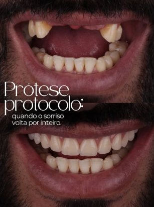

Reabilitação fixa e removível
Próteses Dentárias
As próteses dentárias substituem um ou mais dentes perdidos, devolvendo função mastigatória, fala e harmonia facial — hoje reproduzindo cor, forma e translucidez muito próximas às de dentes naturais.
Prótese Protocolo
Prótese fixa, parafusada ou cimentada sobre implantes, indicada para reabilitação total de uma arcada em pacientes sem dentes remanescentes ou com perdas extensas.
Prótese fixa (coroas e pontes)
Coroas cobrem um dente enfraquecido ou tratado endodonticamente; pontes substituem um ou mais dentes ausentes apoiando-se nos dentes vizinhos ou em implantes.
Prótese removível
Total (quando não há nenhum dente remanescente) ou parcial (retida por grampos ou encaixes de precisão), indicada quando a reabilitação fixa não é viável.
Dentes provisórios
Instalados no mesmo dia da cirurgia ou preparo, garantindo função e estética enquanto a prótese definitiva é confeccionada em laboratório.
Quando procurar
- Perda de um ou mais dentes
- Desgaste ou fratura extensa impossibilitando restauração simples
- Reabilitação total sobre implantes
- Substituição de próteses antigas ou desadaptadas